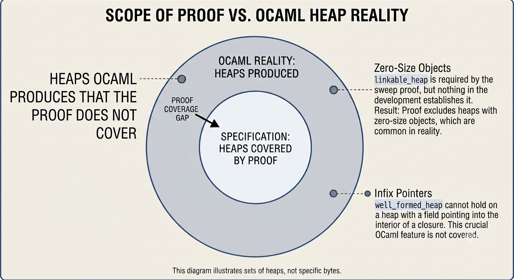

Nik wrote recently about how the mark-and-sweep collector from my thesis became a verified generational GC for OCaml. He said auditing specifications was the main bottleneck.
This is what that looked like from my side.
Nothing below is a bug in the code. They are gaps in specifications. Usually the code is fine and the proof covers less than the code handles.
Where to begin
I have written F* proofs by hand for years. A development I wrote myself, I can navigate. This one was mostly LLM-generated and much bigger than anything I had read before. I had no idea what to read first.
What worked was starting at the end-to-end theorem and going down. Take a property. Find where it is stated. Ask what establishes its preconditions. Follow that until you hit the top or run out of callers.
That is when the gaps show. A proof tells you the conclusion follows from the hypotheses. It says nothing about whether those hypotheses describe the heaps you care about.

The picture is the whole post. The heaps the specification talks about are a subset of the heaps OCaml produces, and everything below lives in the ring between the two.
The free list
GC.Spec.FreeList.Sweep proves that sweeping preserves free-list exactness. Clean proof, no admits. It requires linkable_heap: every object has room for a link word.
linkable_heap appears nowhere in GC.Spec.Correctness or GC.Impl. And well_formed_heap does not imply it.
So the property holds, and nothing establishes the condition it holds under.
fl_exact says the free list holds exactly the blue blocks: everything on the list is free, and every free block is on the list. It is the property the whole free-list development is built to establish. And it is not referenced from the correctness statement either. The four pillars of full_gc_correctness say nothing about the free list at all.
Neither is a soundness problem. Both are worth knowing.
The one-word block
linkable_heap forbids objects of size zero. OCaml has them. So I went to see what would happen if one appeared.
Here is our sweep_object, white branch:
let g' =
if U64.v ws > 0 && U64.v hd + U64.v mword * 2 <= heap_size then
HeapGraph.set_field g obj 1UL fp
else g
in
let g'' = makeBlue obj g' in
(g'', obj)A zero-size white object takes the else g branch, so no link is written. But makeBlue is outside the guard, and the object is returned as the new free pointer either way. So the head of the list has no successor.
Worse than that. The link from one free block to the next is stored in the block's first field, and fl_next reads it from the block's own address. For a zero-size object there is no first field, so that address holds the next object's header. Following the list would read a header as if it were a pointer.
Then I checked stock OCaml. I nearly skipped that.
OCaml 4.14 defaults to the best-fit policy, and bf_merge_block in runtime/freelist.c is the closest thing there to our pass. It does what ours does: walk a run of adjacent free blocks, then write one header at the end.
Here is that end, after any oversized pieces have been split off, with wosz the wosize of what remains:
if (wosz > 0){
Hd_val (start) = Make_header (wosz, 0, Caml_blue);
bf_insert_sweep (start);
}else{
Hd_val (start) = Make_header (0, 0, Caml_white);
caml_fl_cur_wsz -= Whsize_wosize (0);
}The wosz > 0 test is the whole thing. If the remainder has at least one field, it gets a blue header and is inserted into the free list. If it is a single word, a header and nothing else, it gets a white header and is not inserted. OCaml calls these fragments.
Next-fit and first-fit handle it one block at a time instead, with a comment that says the intent plainly: "This is a fragment. Leave it in white but remember it for eventual merging with the next block." The fragment stays white and is absorbed later, when a new header written at its address covers it and the block above.
So in every policy, a fragment is never blue and never a list cell.
That matters because of free-list completeness: every blue block is on the free list. A fragment could not be on the list, having no field to hold a link. Keeping it white means completeness never has to account for it.
That changed the finding. A zero-size block does not break anything.
Both implementations perform the same test, and do different things with the answer.
OCaml asks wosz > 0 to decide the block's colour. A zero-size block stays white, so it is not a free block at all, and completeness has nothing to say about it.
Ours asks the same question to decide only whether to write the link. The colour is set outside that branch, so a zero-size block turns blue either way. Blue means free, free means it should be on the list, and it cannot be on the list. That is exactly what completeness forbids.
OCaml rules the case out by construction. We rule it out by hypothesis, and then never establish the hypothesis.
Then I read the extracted C
At this point I thought I had found a hazard in the collector. I had not. I had found it in the specification, and the two are not the same thing.
fused_sweep_coalesce is what actually runs, and it does not sweep object by object. It walks a run. Black objects are recoloured white and end the run. Everything else extends it, white and blue alike. No individual block is ever linked, so there is no link write to skip and no zero-size block left as a dangling head.
So the hazard I had described does not arise in the code at all.
That left a question. If the implementation does not do what sweep_object does, how are the two connected? Through fused_eq_sweep_coalesce:
fused_sweep_coalesce g == coalesce (fst (sweep g fp))The fst is the answer. Sweep's free pointer is discarded, and coalesce rebuilds the list from 0UL. So sweep_object's divergence is real, and the composition hides it. The specification is wrong about a step whose output nothing downstream reads.
Three readings. The first said the code was broken. The second said the specification was. The third said the specification is wrong in a place that does not reach the code. Only the third was right.
Infix pointers
This one was a real coverage gap.
well_formed_heap_part2 requires every pointer field to target an object of the heap. Infix objects are the interior closures OCaml uses for mutually recursive functions. They are never in the object list, because the walk steps by wosize and skips over them inside their parent.
So a heap with a field pointing at an infix object cannot satisfy well_formed_heap. OCaml produces such heaps all the time.
The machinery existed. resolve_object maps an infix object to its parent, and leaves anything else unchanged. Mark calls it on every field target. But the proof only ever gives it targets from the object list, and infix objects are never in that list. So it always returns the target unchanged. The call does nothing the proof can see.
Akhil Tulluri found the same thing from the other side, by running make coldstart and watching it die on camlinternalFormat.ml. That file is full of mutually recursive functions.
It has since been fixed upstream.
That pairing is the lesson. Reading specifications finds inconsistencies. Running the collector finds heaps your specification quietly excludes. An audit could find those too, in principle. Running the thing is just much faster.
What is still missing
Every lemma about alloc_spec is a preservation property. Several take obj_out <> 0UL as a hypothesis rather than a conclusion. So if allocation returns a block, the block is sound. Nothing says it returns one when a suitable block exists.
A collector that stranded every free block would satisfy all of them. It would report out of memory forever.
Free-list completeness would give the progress property. Sweep's half is proven. The coalescing half is what I am working on now.
That half is harder. Coalescing removes objects. Absorbed blocks stop being objects, and one merged block takes their place. It also defers linking, so mid-walk there are blue objects on neither list.
There is also no heap conservation invariant. Nothing says total heap equals allocated plus free plus overhead. And nothing says coalescing leaves no two adjacent free blocks, which is the entire point of the pass.
The specification says what coalescing preserves, not what it achieves.
What I would tell someone starting
Read the analogous proof before writing your own. I spent a long time proving an address-ordering property before finding GC.Spec.Coalesce.Descending, which had done it already, and better.
Check that your hypotheses are satisfiable. Replace the body with () and the conclusion with False. If that typechecks, the hypotheses are contradictory and the lemma says nothing. An admit in the body makes the test meaningless. I found that out by doing it.
When a property requires a condition, find out who establishes it. That one question turned up most of this post.
And write down what each part of the specification means, in your own words. Nik says the same. I would say it more strongly. Several times I thought I understood an invariant. Then when I asked myself which heaps it allowed, I had no answer. Only then did I go and work it out.